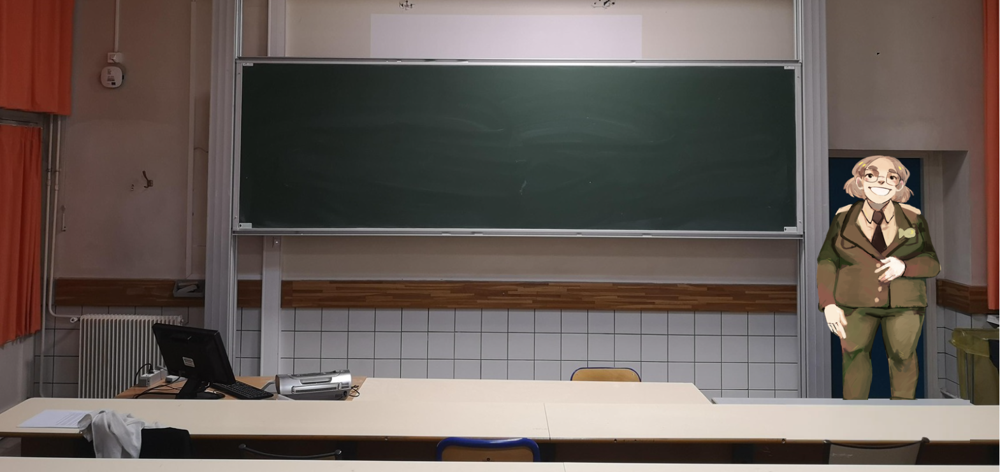
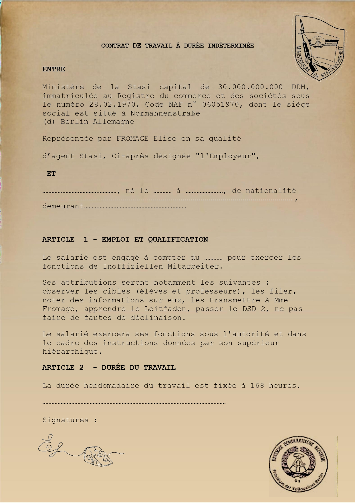
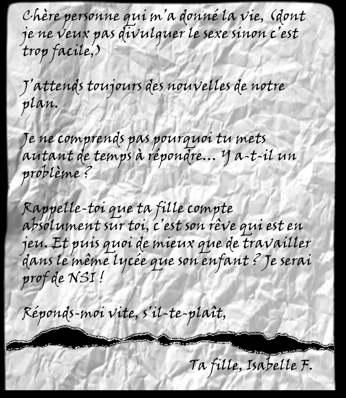
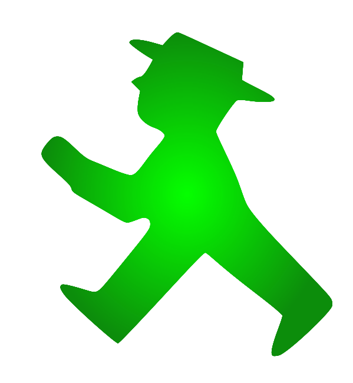

Menu
Aller voir le panneau d'affichage

Narrateur
Vous entrez en salle H203, Mme Fromage vous attend, l'air mystérieux
M. Concombrette
Mme Mozza-Garcia
M. Fournée
Mme Fontaneth
a
empoisonné
poignardé
kidnappé
étranglé
M. Champignon. Son motif ? la victime
manquait de rigueur.
refusait de prendre parti entre les SVT et la NSI.
était plus apprécié des élèves.
ne voulait pas laisser le poste de professeur de NSI à sa fille.
Mais un indice l'a trahi ! Le coupable a
corné une page d'un livre où un personnage est empoisonné !
a reçu une lettre suspecte !
a été vu en train de se disputer avec la victime !
a laissé des traces sur son historique !


Score
0
